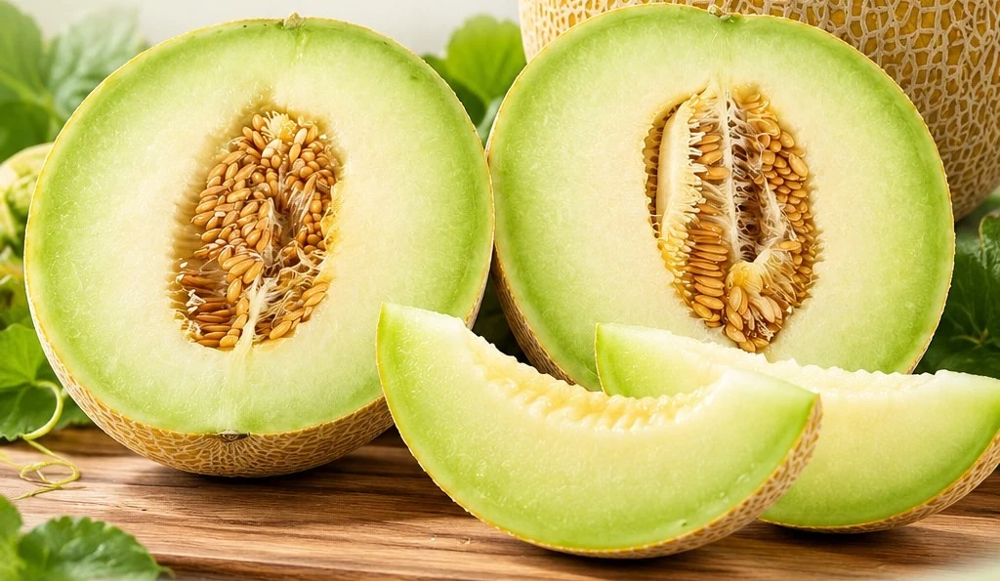
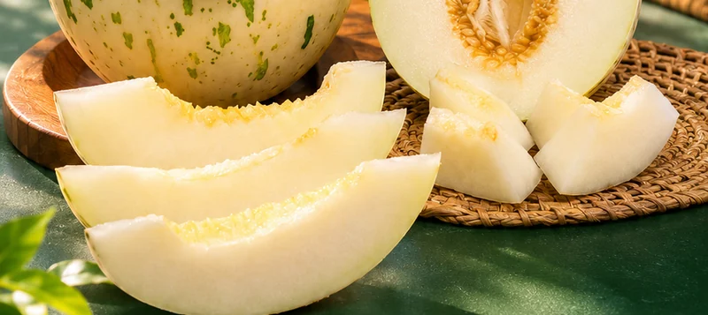
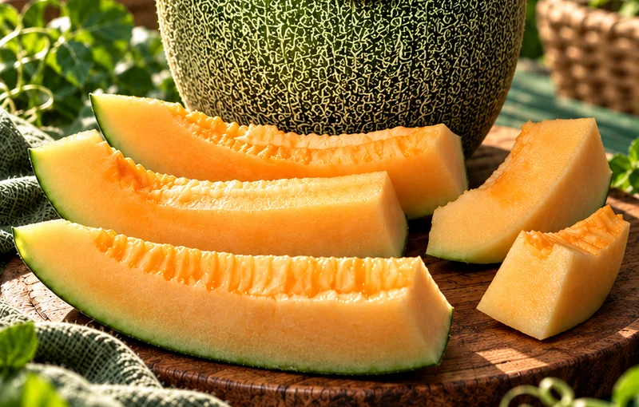
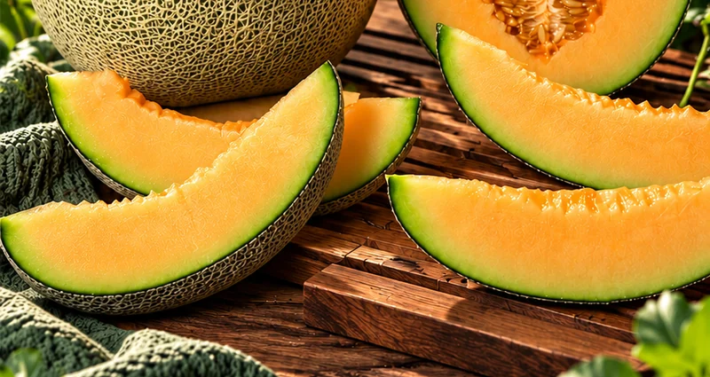
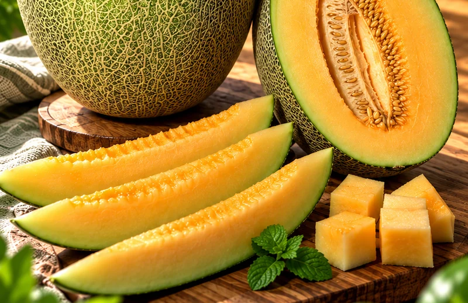
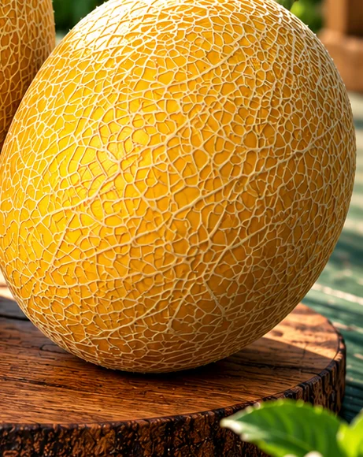
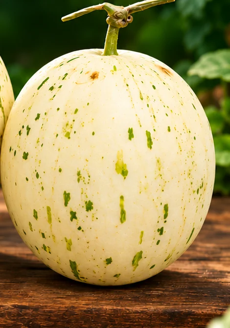
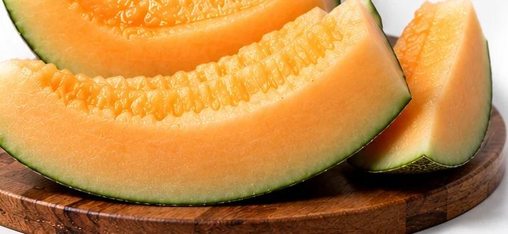
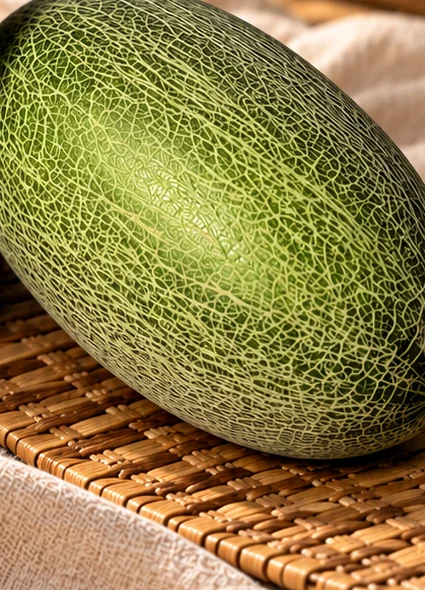

Melon hidroponik, terintegrasi dari hulu ke hilir.
Greenhouse, budidaya, dan pemasaran dalam satu arah pengembangan agribisnis.
Jelajahi ProdukMenumbuhkan pertanian. Menghubungkan hasil dengan pasar.
PT GHI Makmur Indonesia mengembangkan agribisnis melon melalui greenhouse, budidaya hidroponik, penanganan pascapanen, dan pemasaran yang terintegrasi.
Green House Indonesia menjadi identitas kegiatan greenhouse dan pertanian modern. GHI MELON hadir sebagai merek produk melon.
Kualitas
Mutu menjadi pertimbangan utama dari budidaya sampai pelanggan.
Integritas
Informasi produk, proses, dan legalitas disampaikan secara akurat.
Inovasi
Terbuka pada teknologi greenhouse dan perbaikan proses.
Kemitraan
Membangun hubungan jangka panjang dengan petani dan pembeli.
Visi dan misi kami
Menjadi perusahaan agribisnis melon hidroponik Indonesia yang terpercaya, terintegrasi, dan berorientasi pada kualitas melalui pengembangan greenhouse modern serta jaringan pemasaran yang kuat.
- Mengembangkan fasilitas greenhouse yang dirancang sesuai kebutuhan budidaya dan kondisi lokasi.
- Menerapkan praktik budidaya yang terencana, terdokumentasi, dan berfokus pada konsistensi hasil.
- Membangun identitas produk melon yang jelas melalui pemilihan varietas, standar mutu, dan kemasan yang tepat.
- Menghubungkan produksi dengan pasar melalui pemasaran, distribusi, dan kemitraan yang saling menguntungkan.
- Mendorong kemitraan petani dan peningkatan kapasitas melalui pendampingan serta koordinasi operasional.
- Menumbuhkan bisnis secara bertahap dengan tata kelola, kepatuhan, dan evaluasi kinerja yang berkelanjutan.
Identitas dan legalitas perusahaan
PT GHI Makmur Indonesia, berkedudukan di Jakarta Selatan, DKI Jakarta. Informasi berikut mengikuti profil perusahaan.
- NIB 1009260116962, diterbitkan 10 September 2026.
- Akta pendirian No. 106, tanggal 8 September 2026.
- Pengesahan AHU-0072967.AH.01.01.TAHUN 2026, tanggal 9 September 2026.
- PMDN; skala kegiatan pada NIB: Usaha Mikro.
- KBLI 01132 — Pertanian Buah Semusim; 46312 — Perdagangan Besar Buah-buahan; 41019 — Konstruksi Konvensional Gedung Lainnya.
Kenali pilihan melon
GHI MELON.
Enam varietas, satu katalog. Temukan produk yang ingin Anda kenali lebih dekat.
Inthanon Signature
Inthanon Signature menjadi fokus pengembangan produk melon hidroponik GHI MELON.
Lihat Produk
Dalmation
Pilihan varietas GHI MELON.

Hamiqua
Pilihan varietas GHI MELON.

Rock Melon
Pilihan varietas GHI MELON.

Sweet Hamy
Pilihan varietas GHI MELON.

Sweet Lavender
Pilihan varietas GHI MELON.
Dari kebutuhan lahan
hingga tujuan pasar.
Pendekatan terintegrasi untuk pengembangan agribisnis melon.
Greenhouse
Perencanaan dan pembangunan berdasarkan kebutuhan budidaya, kondisi lahan, dan target operasional.
Budidaya hidroponik
Perencanaan tanam, pengelolaan tanaman, dan pemantauan sebagai satu rangkaian produksi.
Pascapanen
Penanganan buah, sortasi, dan pencatatan hasil sebagai bagian dari pengembangan mutu.
Pemasaran
Pengembangan identitas produk, distribusi, dan penjajakan kerja sama dengan pembeli.
Bagaimana proyek greenhouse direncanakan?
Dimulai dari konsultasi kebutuhan, peninjauan lahan, dan perencanaan tata letak. Struktur, penutup, ventilasi, irigasi, serta sistem budidaya dikoordinasikan sesuai spesifikasi proyek.
- Brief: kebutuhan dan target.
- Desain: spesifikasi dan anggaran.
- Pelaksanaan: pembangunan dan koordinasi.
- Evaluasi: pemeriksaan dan serah terima.
Spesifikasi teknis, biaya, jadwal, perizinan, dan cakupan pekerjaan ditetapkan berdasarkan survei, persetujuan, serta kontrak proyek.
Satu rangkaian,
dari rencana ke pasar.
Setiap tahap saling terhubung dalam arah pengembangan bisnis kami.
Perencanaan
Kebutuhan, lokasi, varietas, dan target operasional menjadi titik awal.
Infrastruktur
Pengembangan greenhouse dan sistem pendukung sesuai kebutuhan proyek.
Budidaya
Pengelolaan tanaman, irigasi, nutrisi, dan kondisi lingkungan.
Panen & mutu
Penentuan waktu panen, penanganan buah, serta sortasi hasil.
Identitas produk
Pengembangan merek, pelabelan, dan presentasi produk.
Pemasaran
Menghubungkan hasil produksi dengan pembeli dan mitra distribusi.

Proses yang terencana.
Perbaikan yang berkelanjutan.
Fokus operasional diarahkan pada keteraturan proses, pemantauan tanaman, dan pencatatan untuk mendukung konsistensi mutu.
- Perencanaan varietas, jadwal tanam, dan kebutuhan input.
- Pemantauan pertumbuhan serta kesehatan tanaman.
- Penanganan panen dan evaluasi setiap siklus.
Arah pengembangan pengendalian mutu
Kerangka yang disarankan meliputi identifikasi varietas, pemeriksaan visual buah, sortasi sesuai kriteria perusahaan atau pembeli, pelabelan, serta pencatatan panen dan tujuan pengiriman. Kerangka ini bukan pernyataan sertifikasi.
Lebih dekat dengan
pilihan kami.
Detail buah dari materi visual produk GHI MELON.


Tumbuh bersama melalui kemitraan yang jelas.
Kami membuka ruang untuk menjajaki kolaborasi dengan petani, pengelola greenhouse, pemasok, pembeli, dan mitra distribusi.
Diskusikan KemitraanLet's grow
together.
Mulai percakapan tentang produk melon, greenhouse, atau peluang kemitraan.
Hubungi melalui WhatsApp